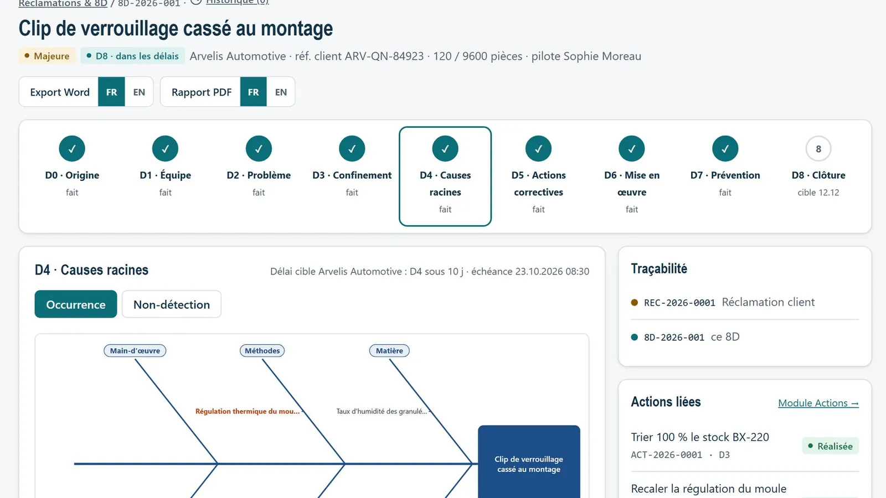
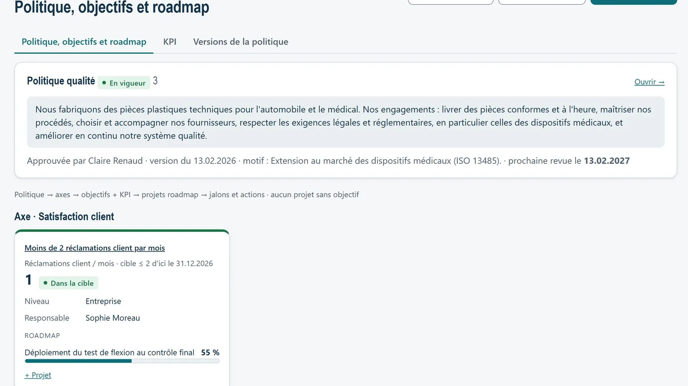
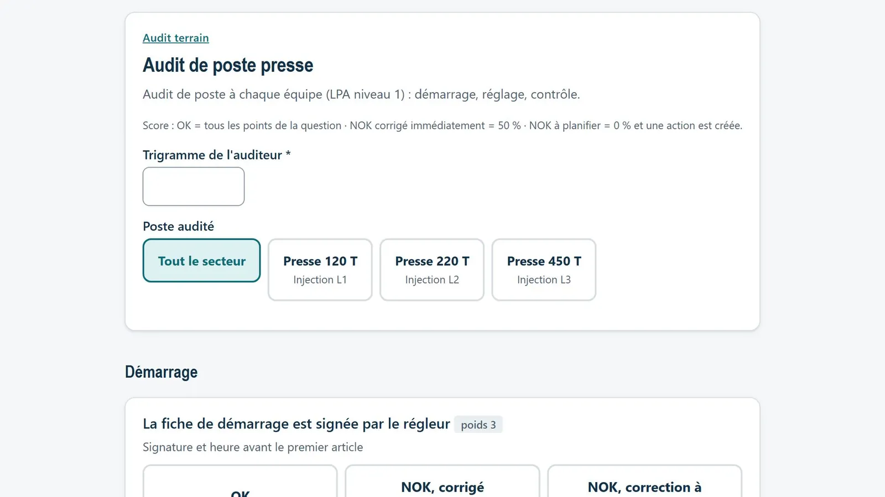
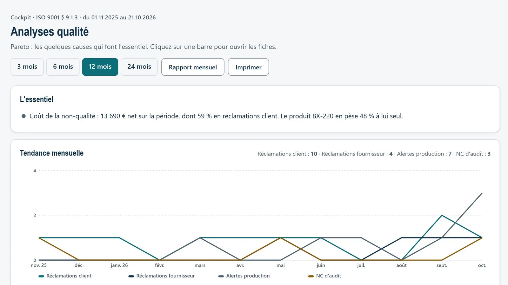
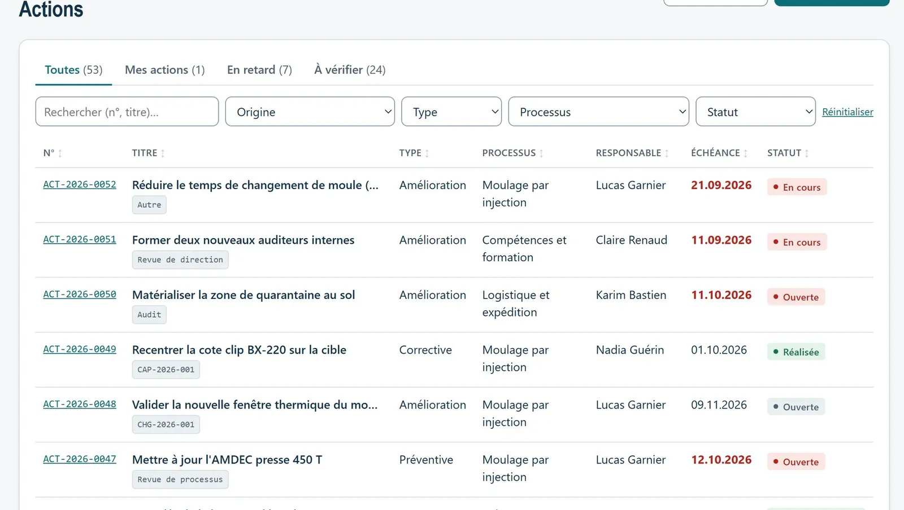
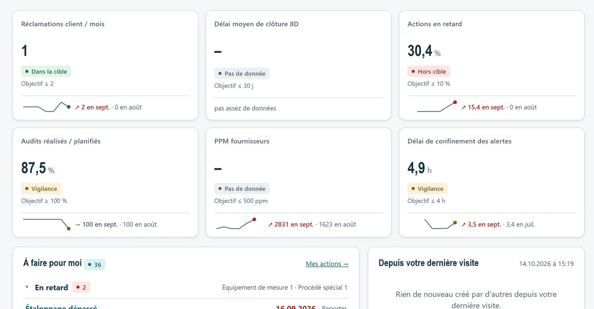
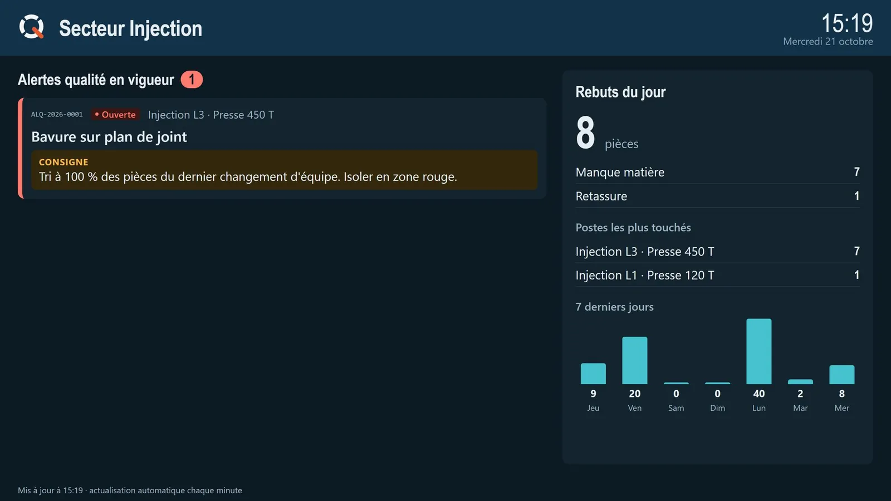

The quality cycle, finally visible
Qyklo runs the quality management system of an industrial subcontractor, ISO 9001 and ISO 13485: complaints and 8D, audits, suppliers, deviations, KPIs and reviews. One tool instead of scattered Excel files.
Qyklo comes from the Greek kyklos, the circle, the cycle: the PDCA cycle of continuous improvement. The Q stands for quality, the Y and the K are my initials. The logo is a Q made of the cycle: four segments, Plan, Do, Check, Act, and an orange tail coming out of it, like the result it produces.
A quality system scattered across dozens of files
Before
- One Excel file per topic: complaints, audits, suppliers, metrology
- Scattered actions, each with its own overdue rule
- Audit evidence to rebuild before every certification
- A shop floor disconnected from the quality department
With Qyklo
- One action list, one overdue rule
- The status of every action and every 8D drawn as the PDCA cycle
- Audit evidence produced as you work
- Shop floor tablet and screen connected to the quality system
The whole PDCA cycle in one tool
Plan · steer
- Versioned quality policy, objectives and roadmap
- KPIs computed automatically, position against target
- Process and management reviews, frozen then approved
- Registers: issues, interested parties, risks and opportunities
Do · produce
- Quality alerts on the tablet and a TV screen per area
- Scrap declared at the workstation, Datamatrix label scanned
- Floor audits: workstation audit, 5S, LPA
- Deviations, change control, special process validation
Check · verify
- Audit programme, findings, qualified auditors
- Pareto analysis, trends and cost of poor quality
- Capability studies, metrology, customer satisfaction
- ISO requirements page: every clause and the evidence covering it
Act · improve
- Customer complaints and 8D: Ishikawa, 5 whys, Word report in French and English
- Supplier complaints and printable SCAR
- Corrective and preventive actions in a single list
- “Seen before?”: similar cases from the last 24 months
What Qyklo takes over from the mini-apps
The mini-apps served as a testing ground. Qyklo brings their core into one shared system; OQC and Gage R&R remain standalone, more specialised tools.
The application in pictures
Fictitious demo data. Interface in French; SCAR and 8D reports are also available in English.







Built for a certified system
See Qyklo live
The public demo runs on fictitious data: browse the 8Ds, the KPIs and the tablet.